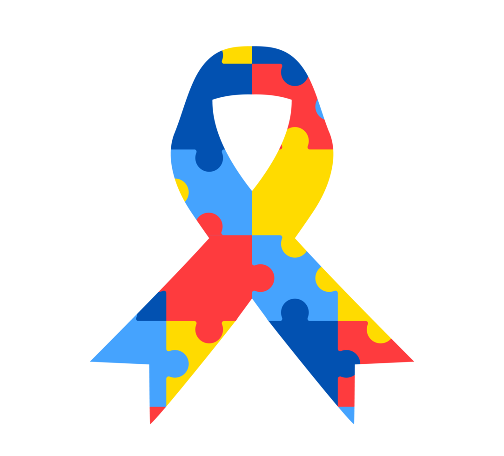

História do Dia do Orgulho Autista
O Dia do Orgulho Autista foi criado em 18 de junho de 2005 por Jim Sinclair, ativista autista dos Estados Unidos, como uma forma de celebrar a identidade autista e promover a neurodiversidade.
Essa data serve para combater o preconceito, rejeitar a ideia do autismo como uma doença e valorizar as diferenças.
A partir de então, a data ganhou força em todo o mundo, reunindo pessoas autistas, familiares, profissionais e ativistas na luta por direitos e visibilidade.